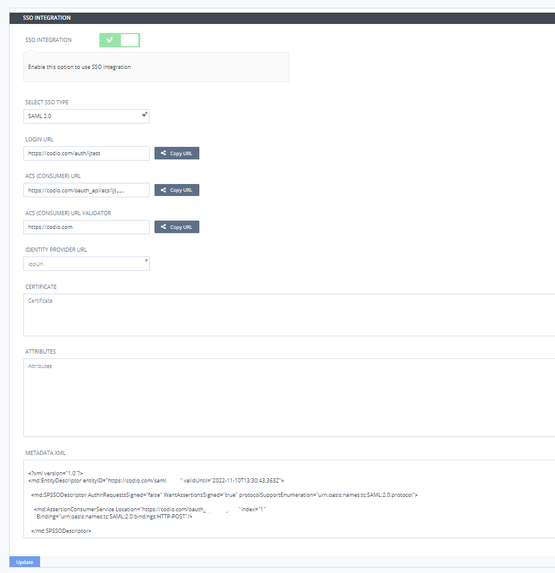

Enable SSO Integration¶
You can enable sso integration to integrate with your own SSO service provider from the Organization > Integrations page in Codio.

Important
Your SSO Custom User fields need to be set up with FirstName, LastName, Email Address and Role (Teacher/Mentor or Student).
Enable SSO¶
1: Enable SSO and select the SSO type. Currently suported SAML 2.0
2: Log in to your SSO service provider
3: Find and add the SAML application
4: Go to Configuration and copy in from Codio
the Login URL
the ACS (CONSUMER) URL
the ACS (CONSUMER) URL VALIDATOR
5: Save the configuration
6: Go to Parameters and set up the Custom User fields, checking Include in SAML assertion mapping the value field to the relevant fields from your SSO
for Role, set the value to Role(Custom)
7: Go to SSO and copy the SAML 2.0 Endpoint HTTP and paste into the Identity Provider URL field in Codio, and find and copy the X. 509 Certificate into the Certificate field in Codio.
Note
These field names relate to OneLogin and may be different in other service providers
8: In Codio set up the Attributes to map the Custom User fields from your SSO service provider (see below)
9: Press the Update button in Codio to create the integration
10: Configure your SSO users to use the SAML application
11: Copy and distribute the Login URL from the Codio integration field for your users to use
Setting up Attributes¶
The attribute field in Codio is how your SSO custom user fields are mapped to Codio.
example:
{
"mapAttributes": {
"email": "Email",
"firstName": "FirstName",
"lastName": "LastName",
"role": "Role"
},
"mapRoles": {
"student": ["student"],
"teacher": ["teacher"]
}
}
Where in your SSO you have set up the custom user fields as Email, FirstName, LastName, Role and your roles as student, teacher
If your SSO service provider provides urn:oid attributes for the custom user fields, you can use those
example:
{
"mapAttributes": {
"email": "urn:oid:0.9.2342.19200300.100.1.3",
"firstName": "urn:oid:2.5.4.42",
"lastName": "urn:oid:2.5.4.4",
"role": "Role"
},
"mapRoles": {
"student": ["student"],
"teacher": ["teacher"]
}
}
SSO Roles¶
The SSO roles you set will determine whether the user accesses Codio as either a student or teacher. If your SSO service provider supports Mentor role, that can also be set for teachers who you wish to access with Read Only access.
Login URL¶
When set up, the login URL can then be used by your users to login through your SSO service provider.
Note
Your users will still be able to access Codio from the usual login URL but will not be authenticated through your SSO service provider.
Changing Email address in SSO¶
If the users email address is changed in the SSO, by default a new Codio account will be created when users access Codio from the SSO. To avoid this, instruct your users to log into Codio directly first and change their account email address before accessing from the SSO.